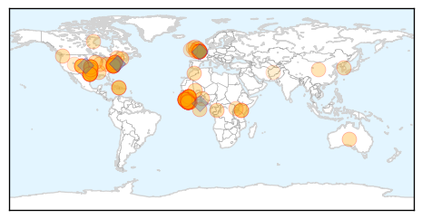

Ebola
30-Day Web Trend
0 alerts, 0 warnings

30-Day Twitter Trend
0 alerts, 0 warnings

Article Locations
Article Confidences
Top Articles:
- 1.000
- UN lauds Liberian progress in fighting Ebola
- 1.000
- Ebola: Who created this terrible virus and why?
- 1.000
- Diocesan hospitals offer insights on Ebola protocols
- 0.999
- Worldwide Ebola Deaths Rise As U.S. Interest Falls
- 0.999
- 450 US Troops Returning from Ebola Deployments
- 0.999
- Feature: Kenyan medics defy fear to fight Ebola in the frontlines
- 0.999
- Signs Ebola may be levelling off in Sierra Leone - WHO
- 0.998
- US Updates African Diaspora on Ebola Response at Tadias Magazine
- 0.998
- Country is proud of Ebola nurse, Minister tells MPs
- 0.998
- Ebola spread slows down in Sierra Leone, says WHO
- 0.997
- Yes, this is one of the worst flu seasons in recent memory
- 0.997
- New church plan on Ebola: pastoral care as well as health, education
- 0.997
- Governments, Competitors Cooperate to Produce Ebola Vaccine
- 0.997
- ESSAY: Why we should ignore predictions of worldwide pandemics
- 0.997
- Sierra Leone News : House to-House Searching in Ribbi Chiefdom for Ebola: Sierra Leone News
- 0.996
- Pauline Cafferkey battling Ebola nurse could remain in critical condition for 'some time'
- 0.996
- Ebola Virus Disease Emergency Appeals (Liberia, Sierra Leone, Guinea, Nigeria, Senegal and Africa Coordination): Combined Ebola Operations Update n°13 - Sierra Leone
- 0.996
- Ebola drug trial starts in Liberia
- 0.994
- African Union and Kenya Sending 170 Health Workers to Ebola Affected Countries - Sierra Leone
- 0.990
- Ebola drug trials start at medical relief agency’s centre in Liberia - Africa
- 0.989
- Scottish Ebola nurse facing lengthy fight for life
- 0.986
- Jo's busy helping others
- 0.986
- Ebola Survivors Across West Africa Share Life-Saving Tips Via Mobile App
- 0.985
- First Responders Emergency Medical Services Incorporated Pays President Sirleaf a Departure Visit; Prepares for Deployment in Sierra Leone
- 0.985
- Pauline Cafferkey, the nurse suffering with Ebola, could remain critical for 'some time'
- 0.984
- Wandtv.com, NewsCenter17, StormCenter17, Central Illinois News-
- 0.984
- New UNMEER Chief Arrives To Assess Ebola Response
- 0.984
- At last, the Ebola vaccine is on its way
- 0.980
- Microsoft funding Md. high-tech academies
- 0.980
- In bigger picture, inequality is declining
- 0.980
- Replay: Video chat on how to meet our state's transportation needs
- 0.980
- Honda fined $70 million for not reporting death, injury complaints
- 0.980
- Department store operator JC Penney plans to close 40 stores and cut 2,250 jobs
- 0.980
- Maryland politician apologizes over threat to sue local paper
- 0.980
- WLOX Editorial: Donate to Mississippi Tornado Relief: Hope, Help and Healing
- 0.980
- Molly Shattuck gets court date for rape charge
- 0.980
- Minimum wage increase forces business owners to make tough decisions
- 0.980
- Lawyer weighs in on fatal crash involving Bishop
- 0.980
- Cummings joins transit advocates in urging continued support for Red Line
- 0.980
- Guilty pleas in case involving controversial tracking device
- 0.980
- Akron bridal shop to close doors just months after Dallas Ebola case visited
- 0.979
- Sierra Leone President to Visit Areas Hard-Hit by Ebola Friday
- 0.978
- Ebola nurse Pauline Cafferkey 'critical for some time'
- 0.977
- Ebola communication tips for health officials
- 0.976
- Ebola nurse Pauline Cafferkey could remain critical for some time, say her family
- 0.973
- North Carolina Doctor In Voluntary Quarantine After Returning From Liberian Aid Mission
- 0.971
- Ohio bridal shop visited by Ebola patient closing down
- 0.969
- Ohio bridal shop visited by Ebola patient closing down
- 0.966
- Ebola nurse Pauline Cafferkey could remain in a critical condition 'for some time', say her family
- 0.966
- Ebola fight has ‘coordination problems’ — UN
Showing top 50 articles...
Top Tweets:
- 0.994
- Ebola Update: 20712 confirmed probable & suspected cases of Ebola reported in 3 most affected countries with 8220 deaths. EbolaResponse
- 0.991
- RT: Ebola Update: 20712 confirmed probable & suspected cases of Ebola reported in 3 most affected countries with 8220 deaths. …
- 0.762
- .@WHO reports that the number of Ebola cases has now exceeded 20k and continues to spread in Sierra Leone http://t.co/tM304SlYCM
- 0.708
- RT: Treatment trial for Ebola started and underway in Liberia well done team! @ISARIC1…
- 0.690
- RT: Ebola aggravating hunger in Liberia - from Ebola daily briefing. http://t.co/zfFH10Vui4
- 0.681
- RT: Staggering: 495 healthcare workers have died in this Ebola outbreak. That is more than the previous largest outbreak e…
- 0.623
- RT: The fight against Ebola far from over. As of next wk CDC will have 200 public health professionals fighting the outbrea…
- 0.574
- RT: Jan 2015 Ebola visualisations and modelling from LSHTM. Now includes projections for Guinea SL and Liberia http://t.c…
Influenza
30-Day Web Trend
1 alerts, 0 warnings

30-Day Twitter Trend
0 alerts, 0 warnings

Article Locations

Article Confidences

Top Articles:
- 1.000
- Maine reports swift surge in reported cases of flu
- 1.000
- Flu widespread in Maine, state CDC reports
- 0.999
- More flu cases, including multiple deaths, reported across US
- 0.999
- MyEasternShoreMD: Kent County News
- 0.999
- The Marysville Advocate: News
- 0.999
- Flu kills 5 in Michigan
- 0.999
- 26 flu-related deaths reported in Kentucky
- 0.999
- The Charleston Chronicle, Flu Vaccine Can Provide Protection for You and Others
- 0.999
- Flu numbers highest in state since 2009-10
- 0.998
- Flu on the Move
- 0.998
- Medical experts still recommending flu shots this season
- 0.997
- Oregon's flu season has yet to peak, likely to continue through March
- 0.997
- Flu may be factor in 9 deaths - most were elderly, Kent County health officials say
- 0.997
- Flu cases pack Excela Health's hospitals in Westmoreland County
- 0.995
- First flu death expected to prompt even more doctor visits
- 0.993
- CDC Report Suggests Severe Flu Season This Year as the 2015 Vaccine Shot Is Less Effective
- 0.992
- Editorial: Do us a favor: Get a flu shot
- 0.991
- The Flu Strikes Rockford—And With Severe Symptoms
- 0.991
- Officials report 1st flu-related death for 2014-15 season
- 0.990
- Norovirus - The Leading Foodborne Bug in the USA
- 0.980
- Jeanie Groh column: Students learn about flu, and you should too
- 0.976
- Athens Daily Review: Local News
- 0.975
- Seven flu deaths reported in ND; Sanford asks people with flu-like symptoms to postpone patient visits
- 0.969
- Doctors Urge Skeptics to Get a Flu Vaccination
- 0.968
- Hospitals impose visitor restrictions as flu activity rises
- 0.963
- Flu Causes Longer Lines at Emergency Rooms Across Springfield -
- 0.959
- Eastern Health implements more visitor restrictions at long-term care homes
- 0.956
- Pioneer Ridge Outbreak Confirmed as Influenza A
- 0.952
- 'Healthy' Iowa Children Get Flu Shots, Die From Flu, Parents Stumped
- 0.949
- Family members told to delay visiting personal care homes due to flu outbreaks
- 0.928
- Flu may have contributed to 9 local deaths
- 0.917
- Avera Sacred Heart Hospital Asking Some To ‘Stay Away’
- 0.891
- Subzero chills close metro Detroit schools; snowfall tonight
- 0.891
- Subzero chills close metro Detroit schools; snowfall tonight
- 0.891
- At least 22 Oklahomans have died from the flu, up from nine deaths last week
- 0.882
- Special flu vaccine to be made available to uninsured East Haven
- 0.875
- NHS crisis: Mutating flu virus means more cases will join queues' at already 'stretched A&Es
- 0.780
- Wis. Vet Continues Ban on Spring Fair Pig Weigh-ins
- 0.637
- Washington, Oregon activate bird flu response; 30 countries restrict U.S. poultry
Top Tweets:
-
No tweets found for Jan 08, 2015